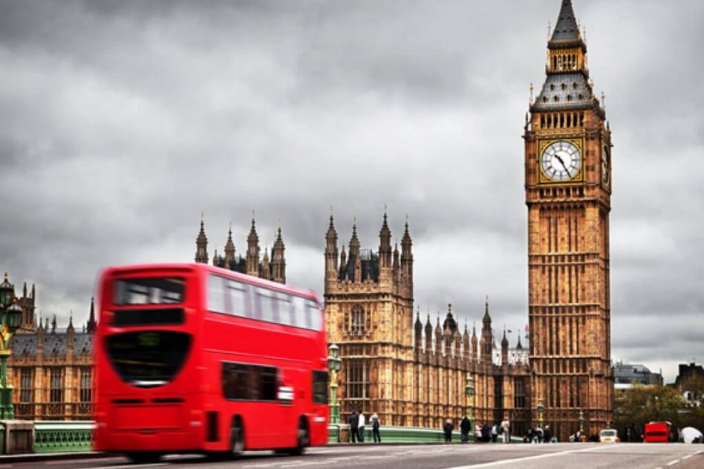

Reino Unido |
|
Reino Unido é um Estadosoberano insular localizado em frente à costa noroeste docontinente europeu. O Reino Unido inclui a ilha da Grã-Bretanha, a parte nordeste da ilha da Irlanda, além de muitas outras ilhas menores. A Irlanda do Norte é a única parte do Reino Unido com uma fronteira terrestre, no caso, com a República da Irlanda.Fora essa fronteira terrestre, o país é cercado pelo oceano Atlântico, o mar do Norte, o canal da Mancha e o mar da Irlanda. A maior ilha, a Grã-Bretanha, é conectada com a França pelo Eurotúnel. O Reino Unido é uma união políticade quatro "países constituintes": Escócia, Inglaterra, Irlanda do Norte e País de Gales. O governo é regido por um sistema parlamentar, cuja sede está localizada na cidade de Londres, a capital, e por uma monarquia constitucional que tem a rainha Isabel II como a chefe de Estado. Asdependências da Coroa das Ilhas do Canal (ou Ilhas Anglo-Normandas) e a Ilha de Man (formalmente possessões da Coroa), não fazem parte do Reino Unido, mas formam uma confederação com ele. O país tem quatorze territórios ultramarinos, todos remanescentes doImpério Britânico, que no seu auge possuía quase um quarto da superfície da Terra, fazendo desse o maior império da história. Como resultado da era imperial, a influência britânica no mundo pode ser vista no idioma, na cultura e nos sistemas judiciários de muitas de suas antigas colônias, como o Canadá, a Austrália, a Índia e osEstados Unidos. A rainha Isabel II permanece como a chefe daComunidade das Nações (Commonwealth) e chefe de Estado de cada uma das monarquias na Commonwealth. O Reino Unido é um país desenvolvido, com a sexta (PIB nominal) ousétima (PPC) maior economia do mundo. Ele foi o primeiro paísindustrializado do mundo e a principal potência mundial durante oséculo XIX e o começo do século XX, mas o custo econômico de duas guerras mundiais e o declínio de seu império na segunda metade do século XX reduziu o seu papel de líder nos temas mundiais. O Reino Unido, no entanto, permaneceu sendo uma potência importante com forte influência econômica, cultural, militar e política, sendo uma potência nuclear, com o terceiro ou quarto (dependendo do método de cálculo) maior gasto militar do mundo. É um Estado-membro da União Europeia, tem um assento permanente no Conselho de Segurança das Nações Unidas e é membro do G8, da Organização do Tratado do Atlântico Norte (OTAN), daOrganização Mundial do Comércio (OMC) e da Comunidade das Nações.
 |